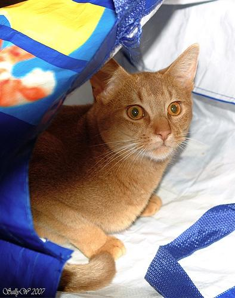

基礎と代表的な機械学習手法 · Learning Paradigms
学習の枠組み
学習に使える情報の違いを、製品検査の例で比べます。人が付けた正解、データから作る答え、行動の結果が、それぞれ何を教えるかを説明します。
教師信号と学習の枠組み
機械学習では、予測や行動を改善するための手がかりを教師信号と呼びます。手がかりが人の付けた正解か、データから作った答えか、行動した後の報酬かによって、学び方が変わります。モデルは、その手がかりに合うよう内部の数値（重み）を調整します。
例えば製品写真から傷を見つけたいとします。写真に「傷あり」と教える方法も、ラベルのない写真を先に読ませて形を学ぶ方法もあります。次の表は、同じ検査の場面で利用できる情報を変えた例です。
| 枠組み | 学習に渡せる情報 | この例で学ぶこと |
|---|---|---|
| 教師あり | 写真と傷の有無 | 写真から傷あり／なしを予測 |
| 教師なし | 写真だけ | 見え方の似た製品をまとめる。まとまりの意味は人が調べる |
| 自己教師あり | 写真の一部と、隠す前の写真 | 隠した部分を当て、形や模様の特徴を学ぶ |
| 半教師あり | 正解付き100枚と、正解なし1万枚 | 少ない正解と多くの写真の両方を使って傷を分類 |
| 弱教師あり | 個々の傷の位置はなく、製品全体の合否だけ | 粗い正解から、傷を捉える手がかりを学ぶ |
| 強化学習 | カメラを動かした結果と、検査成功などの報酬 | どの角度から撮れば見落としを減らせるかを学ぶ |
枚数は説明用です。半教師ありと弱教師ありの条件は重なることもあります。「どの情報が使えるか」を確かめる方が、名前だけで分類するより大切です。
教師あり学習
教師あり学習は、入力と正解の組から、未知の入力への答えを予測する方法です。製品写真に「傷あり／なし」というラベルを付け、予測と正解を比べてモデルの重みを調整します。学習後は、新しい写真だけを渡して判定します。
種類を答える問題を分類、傷の長さなど数値を答える問題を回帰と呼びます。いずれも、練習に使わなかった製品で役立つかを確かめます。
別の例：メール分類の学習と利用
1メール本文を読み、種類を予測する
賞品を受け取るには、こちらから
今すぐ手続きをしてください。
通常のメール
迷惑メール
2正解と比べて学習する
この例では予測が外れている。「迷惑メール」の予測確率が高くなるよう、モデルの重みを調整する。
学習後、新しいメールを判定するときは本文だけを渡す。
メールの本文と予測は、手順を示す教材例です。「教師」は答え合わせに使う正解で、人が利用時にも横で教えるという意味ではありません。
教師なし学習
教師なし学習は、正解ラベルを用意せず、データの共通点や違いを調べる方法です。製品写真なら、見え方の似たものをまとめるクラスタリングが一例です。正解の「傷あり／なし」を当てる練習とは異なり、できたまとまりが傷、製品の型、照明のどれを表すかは人が調べます。
多くの特徴を少ない数値で表し、データを眺めやすくする次元削減もあります。どちらも、まだ分類の仕方が決まっていないデータを整理するのに役立ちます。
別の例：購入記録のグループ分け
点一つが一人。「常連客」などのラベルはない。
左上は少ない回数で高額、右下は多い回数で少額の人たち。
グループはデータから作る。その意味を「まとめ買い」「こまめな買い物」などと解釈するのは人。
10人分の架空の購入記録。同じ点を、ラベルなしの状態とグループ分け後で比較しています。
強化学習
強化学習は、行動した結果のよさを表す報酬から、行動の選び方を学ぶ方法です。製品検査なら、カメラをどの角度へ動かせば傷を見つけやすいかを、試行の結果から学ぶ例が考えられます。
行動を選ぶ主体をエージェント、選び方のルールを方策と呼びます。各場面で正解の行動を教える代わりに、その後の成功も含めて報酬が大きくなる方策を目指します。まだ試していない行動を調べる探索と、分かっているよい行動を使うことの両立が課題です。
別の例：迷路の報酬と行動
迷路での経路探索
迷路を進むプログラムを考えます。プログラムは現在の位置を見て、上下左右のどこへ進むかを選びます。学習用のルールとして「出口に着いたら10点」「1歩進むたびに1点減点」と決めておきます。
- まず動いてみる。最初は出口への行き方が分からないので、いろいろな方向を試します。
- 結果を記録する。選んだ行動、移動先、受け取った報酬を記録します。行き止まりに進むことも、出口にたどり着くこともあります。
- 行動の選び方を改善する。経験を繰り返し集め、最終的な合計点が高くなる行動を選べるように学習します。
この迷路の報酬：1歩につき −1、出口に着いたら ＋10
10 − 4 ＝ 6点
10 − 6 ＝ 4点
試した行動と得られた報酬をもとに、合計点が高くなる行動の選び方を学ぶ。正解の経路をお手本として渡すわけではない。
同じスタートと出口を結ぶ二つの経路。線は行動の履歴、点数はその結果を評価する報酬の合計。
この採点なら、4歩で出口に着くと合計6点、6歩なら合計4点です。同じ出口でも、短い道の方が高得点になります。出口に向かう途中の1歩は減点でも、その先の到着につながるので、目先の点数だけで判断しないことが大切です。
教師あり学習のように、各地点で「正解は右」と教えるわけではありません。行動した結果から、どんな選び方が後の成功につながるかを学びます。状況に応じた行動の選び方を方策（policy）、行動を選ぶプログラムやロボットをエージェントと呼びます。
報酬の付け方は人が設計します。迷路で出口の10点だけを与える場合と、歩数にも減点を付ける場合では、学習の進み方や望ましい行動が変わります。また、成功した道ばかり使うと、まだ試していない近道を見つけられません。新しい行動を試すことを探索と呼び、既に分かったよい行動を使うこととのバランスも課題になります。
自己教師あり学習
自己教師あり学習は、人が一つずつ正解ラベルを付ける代わりに、データ自身から学習の手がかりを作る方法です。例えば、文章の一部を隠せば、隠す前の内容を正解にして予測の練習ができます。
「自己教師あり」は、答え合わせをしないという意味ではありません。答えを元のデータから用意できるため、大量の文章や画像を学習に使えます。ラベルのないデータを使うという意味で、教師なし学習に含めることもあります。例えば製品写真の一部を隠し、元の画像を正解にして復元を練習します。そこで学んだ形や模様の特徴を、傷の分類に使うこともできます。
半教師あり学習
半教師あり学習は、少量のラベル付きデータと、大量のラベルなしデータを一緒に使う方法です。製品の傷を分類する例では、一部の画像にだけ人が「傷あり／なし」を付け、残りの画像も学習に生かします。図では、その一つである疑似ラベルを使う方法を追います。
1少数の正解付き画像で、傷の分類を学ぶ
製品画像と人が付けたラベルを使い、最初の分類モデルを学習する。
2ラベルなし画像に、モデルで仮の答えを付ける
「傷あり」と強く予測
疑似ラベル：傷あり
「傷あり／なし」で迷う
今回は採用しない
3人のラベルと、採用した疑似ラベルの両方で学ぶ
疑似ラベルは誤ることもある。仮の答えを採用する基準を決め、人が確認した別のデータで改善を確かめる。
製品画像での疑似ラベル学習。画像は傷の有無を描いたイラストで、予測・採否は手順を示す例。
モデルの予測を仮の正解として使うことを疑似ラベルと呼びます。人が付けた正解は一部にしかありませんが、分類したい対象はどの画像でも同じです。モデルの誤りを仮の正解として覚える恐れもあるので、人が確認した別のデータで改善を確かめます。これは半教師あり学習の一例であり、ラベルなし画像の使い方にはほかの方法もあります。
弱教師あり学習
弱教師あり学習は、細かく正確な正解を用意しにくいときに、粗いラベルや不確かな手がかりを使う方法です。例えば傷の場所を見つけたいとき、位置の注釈はなくても、画像全体の「傷あり／なし」なら用意できる場合があります。
1同じ画像でも、教える情報の細かさが違う
「どこに傷があるか」は教えない。
枠を描くには、追加の注釈作業が必要。
2「傷あり」と「傷なし」の画像を比べて学ぶ
画像全体の正解を当てる練習から、傷のある場所を捉える手がかりも得たい。ただし、傷の位置が正しく分かるとは限らない。
製品のイラストで、画像全体のラベルと位置の注釈を比較。緑の枠は人が位置を教える場合の注釈で、モデルの推定結果ではない。
図の「この例で用意するラベル」で得られる正解は、画像全体の「傷あり」だけです。傷を捉える手がかりを学べる可能性はありますが、位置まで直接教えないため、傷の一部や背景に頼ってしまうこともあります。画像全体の分類だけが目的なら通常の教師あり学習であり、ここではより細かい位置を知りたいのに、粗い正解しか使えない点が弱教師ありに当たります。
学習時と利用時の情報
自己教師ありで隠した画素は、学習前には手元にあるので正解に使えます。しかし予測するときのモデルに隠した答えそのものを渡すと、復元の練習になりません。教師ありの製品検査でも、利用時は傷の正解を渡さず写真だけを渡します。
研究では、正解付き写真の枚数や計算時間をそろえ、ラベルのない写真がどこまで役に立つかを調べます。自己教師ありで画像を復元できたことと、傷を見落とさず分類できることは別なので、最後は目的の検査でも評価します。
自己教師あり学習の方法
元のデータから何を正解にするかで、練習の内容が変わります。
| 方法 | 学習で行うこと |
|---|---|
| マスク復元 | 写真や文章の一部を隠し、元の内容を当てる |
| 次トークン予測 | 文章の途中までを見せ、実際に続いた部分を当てる |
| 対照学習 | 同じ写真の加工違いを近い特徴にし、別の写真と区別する |
| 自己蒸留 | 同じ写真を違う範囲で見せ、モデル同士の出力をそろえる |
補足：四つの方法の図とDINOの仕組み
文章の穴埋めと続きの予測、写真の対応付けを図で比べます。
マスク復元
文章や画像の一部を隠し、残りを手がかりに元の内容を当てます。
1元の文章から、入力と正解を作る
隠した場所の前後を見せる
元の文章から取り出しておく
2予測を正解と比べて、モデルを更新する
この入力で「魚を」の予測確率が高くなるように重みを調整する。
入力では「魚を」を隠し、答え合わせ用には残しておく。予測「肉を」は誤答の例。
正解の「魚を」は、元の文章から取り出せます。この例では、隠した位置の前後が予測の手がかりになります。画像なら一部の領域を隠して復元し、形や配置の関係を学ぶ方法があります。
次トークン予測
穴埋めに続いて、文章の続きを正解にする方法を考えます。文章をトークンという処理単位に分け、それまでの文脈から次の一つを予測します。トークンは単語や、単語をさらに分けた断片などです。
1元の文章から、入力と正解を作る
予測する位置より前だけを見せる
元の文章から取り出しておく
2予測を正解と比べて、モデルを更新する
この入力で「魚を」の予測確率が高くなるように重みを調整する。
マスク復元と同じ文章を使い、予測に見せる範囲を比べる。元の文章で次に来た「魚を」が正解。
図では区切り方を単純化しています。マスク復元の例と違い、予測する位置より後の文章は見せません。元の文章で実際に続いていたトークンを正解にするので、これも自己教師あり学習です。大量の文章で繰り返すことで文章を生成する力を学びますが、自然な続きが事実として正しいとは限りません。
対照学習
同じ対象から作った二つの見え方を、似た特徴へ変換するように学びます。
1同じ写真から二つの見え方を作る

この二つの特徴は、近づける
2別の写真から作った特徴とは区別する

この二つの特徴は、離す
「猫／犬」のラベルで組を決めるのではなく、元が同じ写真かどうかで決める。別々に撮った猫の写真でも、この方法では離す側になる。
写真の見た目を直接近づけるのではなく、モデルが取り出す特徴の距離を変える。写真：Oxford-IIIT Pet（CC BY-SA 4.0、権利は元の写真の権利者に帰属）。表示用に切り抜き。
SimCLRなどで使われる考え方です。「同じ」と扱う加工が重要で、文字を反転するなど意味が変わる加工は向かない場合があります。
自己蒸留（DINO）
DINOは、同じ写真の見える範囲が変わっても、共通する特徴を捉えられるように学ぶ方法です。例えば、一方には猫と周囲が写った広い範囲、もう一方には顔付近の切り抜きを見せます。二つのモデルを「教師」「生徒」と呼び、生徒の出力を教師の出力に近づけます。
1枚の写真から、見える範囲を変える
それぞれのモデルで、数値の並びに変換する ↓
生徒を更新したら、教師にも少しずつ反映
教師の重みに、更新後の生徒の重みを少し混ぜる。次の写真でも同じ練習を繰り返す。
同じ写真から作った二つの切り抜きで、出力を合わせる練習をする。図の数値は流れを示すために置いた例で、モデルの実測値ではありません。写真：Oxford-IIIT Pet（CC BY-SA 4.0、権利は元の写真の権利者に帰属）。表示範囲を切り抜き。
出力は、画像の特徴を表す数値の並びを、合計が1になるように変換したものです。各成分に「猫」「犬」という名前を人が付けるわけではありません。図では三つの成分だけで表しています。教師が作った数値の並びが、生徒の学習の目標になります。
教師は、あらかじめ正解を知っているモデルではありません。生徒を更新した後、その重みを教師の重みに少しずつ取り込みます。このように、自分たちのモデルから作る出力をお手本にするので「自己蒸留」と呼びます。
ただ出力をそろえるだけでは、どの写真にも同じ出力を返すだけで済んでしまいます。DINOは教師の出力の偏りや鋭さを調整し、この行き詰まりを防ぐ工夫も組み合わせます。多くの写真で学習した特徴は、画像の分類や似た画像の検索に利用できます。原論文の手法説明では、複数の切り抜きを使う学習と更新方法を示しています。
{kind=link}
{kind=link}